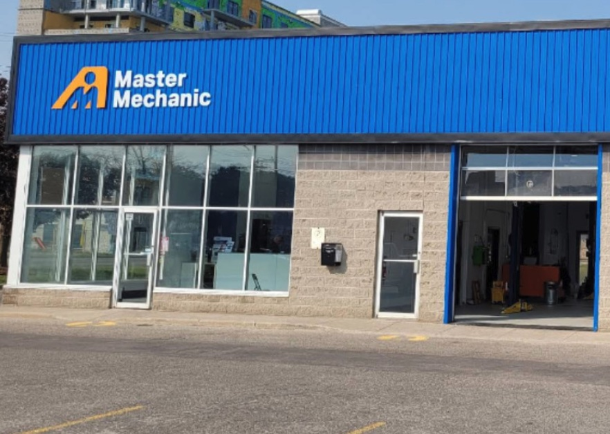

You can't answer your phone from a lift with a scan tool in your hand. Neither can your tech. And when the front desk is with another customer, somebody has to walk across the shop to catch the phone. VoiceClaw answers with auto-shop intelligence. Knows how to ask about the car, qualifies the job, and either books the appointment or hands you a clean message so you can finish the alignment first.
Or skip the pitch and hear the live demo yourself →
Under 5 minutes on a phone call. That's your whole setup. Month-to-month, cancel anytime, keep your number. No credit card. No forms. No dashboard to learn. Built in collaboration with pilot shops right now — expect a real conversation, not a sales pitch.

The call your hands can't reach.
We built VoiceClaw for home-services trades first (plumbers, HVAC techs, roofers, painters). Auto repair is the next trade we're learning. We're looking for 3-5 independent shops to shape the auto-specific build with us. Discounted access. Direct access to the person building it. No sales team. If you've already tried an answering service that couldn't tell a hybrid from a diesel, we'd like to talk.
Every missed call is a brake job, a timing belt, a diagnostic. Half of them are quote-shoppers calling four shops, picking the cheapest, ghosting the rest. The other half are real bookings. You can't tell which one is which if nobody answers, and you can't be on a lift and at the front desk at the same time. A tech who steps off the lift to answer the phone just lost a billable hour to take a call about oil-change pricing.
Customer calls Wednesday at 2pm. Front desk is with another customer. The call rolls to voicemail or a tech steps off the lift to grab it. That tech just lost an hour of billable labor to answer a question about brake pricing on a 2018 Accord. You know this happens every day, and you can't measure it because the ones you lose aren't in any log.
Homeowner calls four shops, asks the same question, picks the cheapest, ghosts the other three. When you give a generic "we'd have to look at the car," they hang up. When you commit to a specific price over the phone, you're stuck with it. You need to qualify and book without over-committing on price, and a rushed tech at the front desk can't do that.
Car owners are asking ChatGPT and Google AI to find a mechanic before they ever scroll search results. The AI picks whoever it can structure and book. Dealership service departments are building for this. Your shop's website was built in 2019. If you're not in the AI lineup, you won't know why your inbound has been softer this year. You'll blame the economy or the dealers.
Generic AI receptionists don't know the difference between a hybrid and a diesel. Human answering services cost $500+/month and still transfer half the calls. Lead-gen platforms sell your own neighborhood back to you at $90 a pop. Here's how we compare.
|
Recommended
VoiceClaw
|
Ruby Receptionist | Rosie / Goodcall | Angi / RepairPal lead platform | |
|---|---|---|---|---|
| Monthly cost | $79 flat | $235–$1,000+ | $90–$250 | $75-150 per lead |
| Answers when your hands are under a hood | ✓ Yes, instantly | ✓ Yes (extra cost) | ✓ Yes | ✗ Doesn't answer calls |
| Asks make, model, year, trim | ✓ On every call | Needs scripting | Generic SMB | N/A |
| Handles hybrid / diesel / EV triage | ✓ Knows what you service | Needs scripting | No | N/A |
| Never commits to a price you didn't authorize | ✓ Defers quotes to you by default | Depends on script | Varies | N/A |
| Books appointments live | ✓ Into your schedule | Takes a message only | Varies | ✗ No booking |
| AI-discoverable (ChatGPT, Perplexity) | ✓ Built in, structured data | ✗ Phone-only | Partial | ✗ Closed ecosystem |
| Setup time | Under 5 minutes, by voice | 1–2 weeks onboarding | Hours in a dashboard | Days to approve |
You call a number. An AI asks you about your shop: what makes and models you service, whether you do hybrid or diesel or EV, what jobs are wait-jobs vs. drop-offs, what your hours are, what your pricing philosophy is on common jobs, when to book and when to hand off to you. By the end of the call, you have a live website, a working business phone number, and an AI receptionist on call.
Phone rings while your front desk is with another customer. VoiceClaw picks up with a natural voice that asks the right questions: year, make, model, trim, what's happening with the car, whether a check-engine light is on, whether it's a wait-job or a drop-off. Gets the info, confirms availability, books the appointment into your schedule. You see it when you step off the lift.
Quote calls ("how much for brakes on a 2018 Accord?") are handled differently than booking calls. By default, VoiceClaw captures the vehicle info and the job type, promises a quote back within the hour, and texts you the details. You quote when you're off the lift. The customer hears a professional process. You keep the booking. Nobody commits you to a price you didn't authorize. (As the pilot matures, you can configure specific quote bands the AI can give without checking with you.)
Car owners increasingly ask ChatGPT or Google AI for a local mechanic. VoiceClaw publishes your service area, makes you service, hours, certifications (ASE, AAA Approved, NAPA AutoCare, OEM-specific training), and bookability in the structured format AI assistants need. If your competitors aren't there, you get the call.
Complex diagnostic, fleet account asking for a multi-vehicle quote, insurance-adjacent work, or a customer with a vehicle you don't service? VoiceClaw transfers you directly, or takes a detailed message with VIN and contact info. Every call is logged and transcribed. You keep the craft; it handles the overhead.
Call the demo number and say "I need brakes on a 2018 Accord" or "my check engine light came on this morning" or "can you service a 2022 Tesla Model 3." See what an AI that actually asks the right auto-shop questions sounds like, before you hire one.
Pilot cohort is 3-5 shops. We call you, not the other way around. Real conversation, not a sales pitch.
VoiceClaw doesn't just save time. It captures the repair orders you're currently losing to voicemail, protects billable labor-hour utilization across your bays, and keeps you findable when AI assistants look.
Based on a typical 3-6 bay independent shop handling a mix of wait-jobs and drop-offs. Your mileage may vary. These are sketch numbers that the pilot cohort will refine.
"My front desk was with a customer when the phone rang. My tech came off the lift to answer it. VoiceClaw caught the next one. Booked a $1,400 brake-and-rotor on a 2019 CR-V while I was finishing the alignment. The customer didn't know they were talking to an AI."
"I'd tried an answering service before. They booked a hybrid as a gas car. Cost me a wasted bay hour and a bad review. VoiceClaw actually knows what a hybrid is. That's the difference."
Testimonial placeholders. Real quotes replace these as the pilot cohort comes online.
By default, VoiceClaw captures the vehicle (year, make, model, trim), the job type, and the customer's contact info. It promises a quote back within the hour and texts you the details immediately. You quote when you're off the lift. The customer experiences a professional process. You never get stuck with a price you didn't authorize. As you get more comfortable with the system, you can configure specific quote bands ("brakes on an economy sedan: $X-$Y") that the AI can give without checking with you. We deliberately start conservative: we'd rather defer a quote than over-commit you.
It's trained on auto-shop language: wait-jobs, drop-offs, diagnostics, OBD-II codes, hybrid vs. diesel vs. EV triage, make / model / year / trim qualification, VIN lookup, check-engine lights, brake pads vs. pads-and-rotors, alignments. Not everything — it's not a master tech, it's a front-desk assistant. It knows when to book and when to hand off to you. Try the demo number and say something that would stump a generic answering service ("2018 Civic with a P0420 code, intermittent"). Compare that to Ruby or Rosie.
Ruby uses human operators. Humans cost money per minute. VoiceClaw uses AI, which doesn't. You get 24/7 coverage at a flat rate instead of variable per-call billing. During the pilot cohort, pricing is discounted from the $79 anchor; we'd rather have your feedback than your full monthly.
Probably not directly, at least not yet. Most franchise agreements route phone systems and customer-facing technology through corporate approval. If you're a franchisee who feels this pain and wants to advocate for it inside your franchise system, we'd love to talk — both to understand the dynamic and potentially to pitch your corporate office later. But the near-term pilot cohort is independent non-franchised shops where you have full decision authority on software and phone systems.
Straight talk: today, VoiceClaw doesn't check parts availability at NAPA / AutoZone Pro / Advance / O'Reilly before booking. It books the appointment; you verify parts when you see the job on your schedule. For parts-dependent jobs, the default flow is to tell the customer "we'll confirm parts availability and call you back within the day." As the pilot cohort matures, we're building shop-management-software integrations (Mitchell1, Tekmetric, ShopBoss) so the AI can check parts-on-order status before committing to an appointment. That's capability we're building with pilot feedback, not something we've already shipped.
You can either keep your existing number and forward overflow or after-hours calls to VoiceClaw, or port your number fully. Most shops start with forwarding to test, then port once they trust it. We handle the telecom piece; you don't touch a carrier.
Integration depth varies by shop management software and is actively being built with pilot feedback. Today, VoiceClaw can text you every booking the moment it confirms, send the job details (year / make / model / trim / VIN / contact / service requested / appointment time) for manual entry, or integrate via Google Calendar if you use it as your bay schedule. Native Mitchell1 / Tekmetric / ShopBoss integration is on the roadmap and is one of the reasons we're running a pilot cohort before rolling out broadly.
No dashboard to configure. Just a phone call. We ask you about your shop: what makes you service, what jobs are wait vs. drop-off, what your hours are, how you want the AI to handle quote questions, when to book directly vs. hand off to you. By the end of the call, the AI is live and your site is built. If you can describe your shop to a new customer, you can set VoiceClaw up.
Yes. Month-to-month, cancel anytime. Your phone number ports back out. We keep your logs and transcripts accessible for 90 days after cancellation. Pilot cohort shops who cancel because capability gaps don't clear fast enough aren't on the hook for anything beyond the months they used.
Flat-rate pricing. Setup in under 5 minutes, by voice. No dashboard to learn. Built for independent shops that still turn wrenches. Pilot cohort is 3-5 shops. If you've already tried an answering service that booked a hybrid as a gas car, we'd like to hear from you.
No credit card. No forms. You talk, we build.